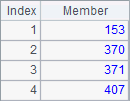
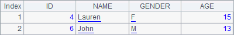
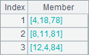
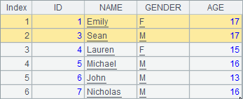
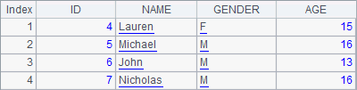

2.6.2 Deleting records
In the following cellset, first the second record is deleted, then the first and second records, and finally the records of students who are older than 15 are deleted:
|
|
A |
|
1 |
=demo.query("select * from STUDENTS") |
|
2 |
>A1.delete(2) |
|
3 |
>A1.delete([1,2]) |
|
4 |
>A1.delete(A1.select(AGE>15)) |
A2, A3 and A4 successively delete records from A1¡¯s table sequence. With the step-by-step execution of the code, you can see its changes as follows:




The delete function is used to delete records from a table sequence. The records are specified by ordinal numbers, or a sequence consisting of the ordinal numbers; or through a query of generating a record sequence. The code in A4 is equal to >A1.delete(A1.pselect@a(AGE>15)).
Let¡¯s look at an example with a record sequence:
|
|
A |
|
1 |
=demo.query("select * from STUDENTS") |
|
2 |
=A1.to() |
|
3 |
>A2.delete(2) |
|
4 |
>A2.delete([1,2]) |
The record sequence in A2 and the original table sequence in the previous example have the same data. First A3 deletes a record, and then A4 deletes two records. Execute the code step by step and you can see the changes of the record sequence in A2:



But a check of the data in A1shows that the original data in the table sequence remains unchanged:

It is the physical records that have been deleted from the table sequence, while it is the references of the records that have been deleted from the record sequence, which won¡¯t affect the physical table sequence.